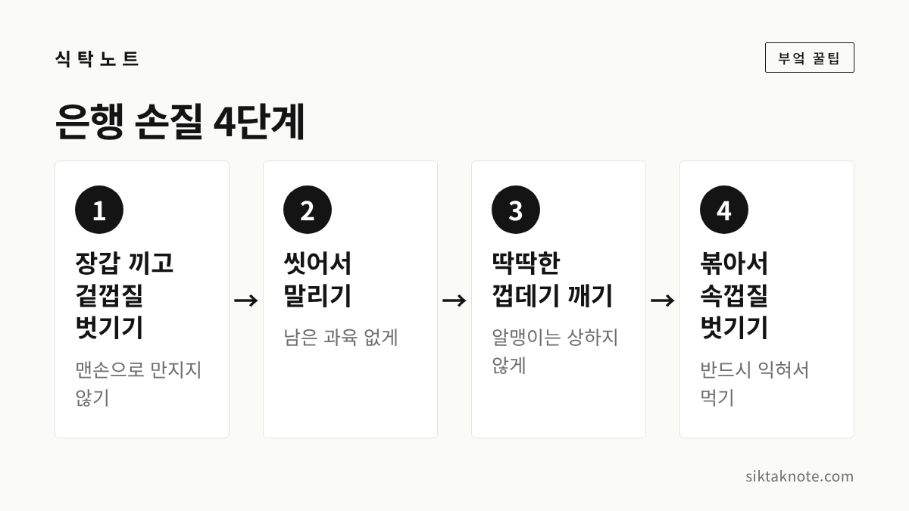
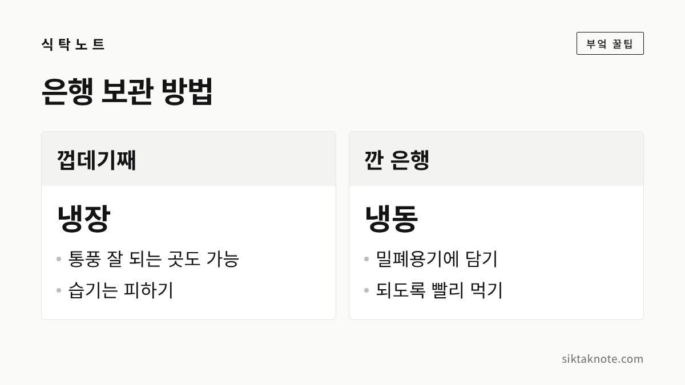

은행 손질법 — 겉껍질 장갑, 팬에 볶아 속껍질 벗기기, 보관과 하루 섭취량

3줄 요약
- 겉껍질은 냄새가 강하고 피부에 닿으면 탈이 날 수 있어서, 장갑을 끼고 벗겨야 합니다.
- 은행은 생으로 먹지 말고 반드시 익히세요. 팬에 볶으면 속껍질도 잘 벗겨져요.
- 식약처는 하루 성인 10알, 어린이 3알 이하를 권했습니다. 많이 먹지 않는 게 안전합니다.
가을 단풍 철이 되면 은행나무 아래에 노란 열매가 수북이 떨어져 있는데요. 시장에서 껍질을 벗긴 은행을 사기도 하지만, 겉껍질이 붙은 은행을 받으면 어디서부터 손대야 할지 막막하죠. 냄새도 강하고, 잘못 먹으면 탈이 날 수 있는 식재료라 순서를 알아 두면 좋겠습니다.
먼저 알아 둘 것 — 우리가 먹는 건 씨앗이에요
은행나무 열매는 노란 겉껍질(과육)과 단단한 하얀 껍데기, 그 안의 알맹이로 이루어져 있습니다. 우리가 먹는 부분은 가장 안쪽의 알맹이, 즉 씨앗이에요. 바깥의 노란 과육은 냄새가 아주 강한 부분이라 먹지 않고 벗겨 냅니다.

겉껍질은 장갑을 끼고 벗기세요
냄새도 냄새지만 더 조심할 점은 피부입니다. 은행 과육이 맨손에 닿으면 피부 알레르기 반응이 나타날 수 있다고 식품의약품안전처 담당자가 방송에서 설명했습니다. 의학 자료에도 은행나무 열매의 과육에 닿으면 심한 피부염이 생길 수 있다고 나와 있고요.
- 일회용 장갑이나 고무장갑을 끼고 벗기세요. 얇은 장갑은 찢어지기 쉬우니 두 겹으로 끼면 안심입니다.
- 과육을 벗긴 뒤에는 흐르는 물에 여러 번 씻어서 과육이 남지 않게 해 주세요.
- 만진 도구와 싱크대도 같이 씻어 두는 게 좋습니다.
혹시 맨손으로 만졌다면 바로 비누로 씻어 내세요. 가렵거나 붉어지면 병원에서 진료받으시는 게 좋겠습니다.


하얀 껍데기를 깨고 속껍질 벗기기
씻은 은행은 물기를 말린 뒤 하얀 껍데기를 깹니다. 호두까기나 집게로 알맹이가 부서지지 않을 만큼만 힘을 주세요. 알맹이를 감싼 얇은 속껍질은 생으로는 잘 안 벗겨져서, 열을 가한 뒤에 벗기는 게 편합니다.
마른 팬에 볶는 법 1. 기름 없이 약불에서 중불로 팬을 달구고 은행을 넣어요. 2. 팬을 자주 흔들거나 저어 가며 볶습니다. 알맹이가 연한 초록빛이 돌고 고소한 냄새가 올라오면 거의 다 된 거예요. 3. 키친타월에 올려 굴리듯 비비면 속껍질이 쉽게 벗겨집니다.
너무 태우면 쓴맛이 나니 불을 세게 올리지 마세요.
데쳐서 벗기는 법 껍데기를 깐 알맹이를 끓는 물에 잠깐 데쳐 건진 뒤 속껍질을 벗기는 방법도 있습니다. 오래 삶으면 물러지니 짧게 데치는 게 좋습니다.
전자레인지로 돌리는 방법도 많이 알려져 있는데요. 공식 자료에서 안전한 방법을 확인하지 못했습니다. 껍데기째 돌리면 터질 수 있다는 이야기도 있어서, 이 글에서는 팬에 볶는 방법만 소개해 드립니다.

반드시 익혀서 드세요
은행에는 생으로 먹으면 위험한 성분이 들어 있습니다. 식약처 설명에 따르면 시안배당체와 메칠피리독신이라는 자연독소가 있는데, 시안배당체는 가열하면 독성이 사라지지만 메칠피리독신은 가열해도 없어지지 않는다고 합니다. 그래서 익혀 먹는 것은 기본이고, 양을 지키는 것이 더 중요합니다.

익힌 은행은 이렇게 먹어요
속껍질까지 벗긴 은행은 기름을 약간 두르고 볶다가 소금을 살짝 뿌려 먹기도 하고, 밥을 지을 때 함께 넣기도 합니다. 달걀찜에 넣거나 꼬치에 꿰어 살짝 굽는 방법도 있어요. 어떤 요리든 이미 익혀서 속껍질을 벗긴 은행을 쓰시고, 하루 섭취량은 그대로 지켜 주세요.
하루에 몇 알까지 먹어도 될까
2023년 9월 YTN 라디오에 출연한 식약처 담당자는 하루 섭취량을 성인 10알 이하, 어린이 3알 이하로 안내했습니다. 이 기준을 넘겨 많이 먹으면 구토, 복통이 생길 수 있고 심하면 몸이 굳고 발작이 나타날 수도 있다고 합니다.
- 한 번에 많이 먹지 말고, 간식으로 몇 알씩만 드세요.
- 아이에게는 적게 주시고, 어린아이에게는 주지 않는 쪽이 안전합니다.
- 먹고 나서 구토, 어지러움, 경련이 있으면 바로 병원에 가시고, 급하면 119에 연락하세요. 먹은 시간과 대략적인 양을 기억해 두면 도움이 됩니다.
보관은 이렇게 해요
식약처 담당자는 겉껍질을 벗기지 않은 은행은 습도가 낮고 통풍이 잘되는 곳이나 냉장고에 두라고 안내했습니다. 껍질을 깐 은행은 밀폐용기에 담아 냉동하고, 되도록 빨리 먹는 것이 좋다고 하고요.

익힌 은행은 오래 두지 말고 식으면 바로 냉장하세요. 곰팡이가 폈거나 쉰내가 나거나 유난히 쓴 은행은 드시지 말고 버리시는 게 좋습니다.
길에 떨어진 은행을 주울 때는
단풍 구경 가서 떨어진 열매가 눈에 띌 때가 있는데요. 가로수나 공원의 은행은 주워도 되는지 정한 규정을 이번에 확인하지 못했습니다. 다만 서울시 자치구들은 악취 민원을 줄이려고 열매가 떨어지기 전에 미리 털어 내는 채취반을 운영한다고 하고, 경기도 파주시처럼 공원 안 열매의 무단 채취를 단속한다는 보도도 있었습니다. 은행을 직접 주우실 계획이라면 해당 구청이나 시청 공원녹지 담당 부서에 먼저 물어보시는 게 좋겠습니다.
주울 때도 맨손은 피하시고, 주운 은행은 위에 적은 순서대로 장갑을 끼고 손질해 주세요.
은행 열매를 손질했다면 은행나무 구경도 해 보세요. 원주 반계리 은행나무가 어떤 곳인지는 반계리 은행나무 가이드에 정리해 두었어요. 노란 잎이 물드는 때에 맞춰 다녀오기 좋겠습니다.

가을에 나는 열매를 안전하게 손질해서, 올해도 맛있게 드시길 바랍니다. 밤을 같이 사셨다면 생밤 보관법도 함께 보시면 좋겠습니다.